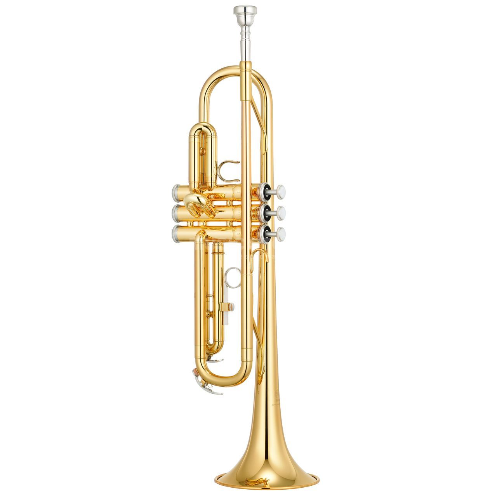

<DOCTYPE! html>
<html>
	<head>
		<title>Student 4 page</title>
		<link rel="stylesheet" type="text/css" href="sitemap.css">
	</head>

	<body>


	<!-- display images -->
		<script>
			function showImage(selectedVal){
				var selectedImage = selectedVal;
				//alert(selectedImage);
				if(selectedImage == "guitar"){
					var image = "Images/guitar.jpg";
					document.getElementById("guitar").src = image;
					document.getElementById("item_guitar").innerHTML = "The Guitar";
					document.getElementById("item_des").innerHTML = "The guitar is a fretted musical instrument that usually has six strings. It is typically played with both hands by strumming or plucking the strings with either a guitar pick or the fingers/fingernails of one hand, while simultaneously fretting (pressing the strings against the frets) with the fingers of the other hand. The sound of the vibrating strings is projected either acoustically, by means of the hollow chamber of the guitar (for an acoustic guitar), or through an electrical amplifier and a speaker.";
				}else if(selectedImage == "piano"){
					var image = "Images/piano.jpg";
					document.getElementById("guitar").src = image;
					document.getElementById("item_guitar").innerHTML = "The Piano";
					document.getElementById("item_des").innerHTML = "The piano is an acoustic, stringed musical instrument invented in Italy by Bartolomeo Cristofori around the year 1700 (the exact year is uncertain), in which the strings are struck by wooden hammers that are coated with a softer material. (Modern hammers are covered with dense wool felt; some early pianos used leather.) It is played using a keyboard, which is a row of keys (small levers) that the performer presses down or strikes with the fingers and thumbs of both hands to cause the hammers to strike the strings";
				}else if(selectedImage == "trumpet"){
					var image = "Images/trumpet.png";
					document.getElementById("guitar").src = image;
					document.getElementById("item_guitar").innerHTML = "The Trumpet";
					document.getElementById("item_des").innerHTML = "The trumpet is a brass instrument commonly used in classical and jazz ensembles. The trumpet group ranges from the piccolo trumpet with the highest register in the brass family, to the bass trumpet, which is pitched one octave below the standard B♭ or C Trumpet.Trumpet-like instruments have historically been used as signaling devices in battle or hunting, with examples dating back to at least 1500 BC. They began to be used as musical instruments only in the late 14th or early 15th century.";
				}else if(selectedImage == "violin"){
					var image = "Images/violine2.jpg";
					document.getElementById("guitar").src = image;
					document.getElementById("item_guitar").innerHTML = "The Violin";
					document.getElementById("item_des").innerHTML = "The violin, sometimes known as a fiddle, is a wooden string instrument in the violin family. Most violins have a hollow wooden body. It is the smallest and highest-pitched instrument (soprano) in the family in regular use.[a] The violin typically has four strings, usually tuned in perfect fifths with notes G3, D4, A4, E5, and is most commonly played by drawing a bow across its strings. It can also be played by plucking the strings with the fingers (pizzicato) and, in specialized cases, by striking the strings with the wooden side of the bow";
				}else{
					var image = "Images/drum.jpg";
					document.getElementById("guitar").src = image;
					document.getElementById("item_guitar").innerHTML = "The Drum Set";
					document.getElementById("item_des").innerHTML = "A drum kit also called a drum set, trap set, or simply drums is a collection of drums and other percussion instruments, typically cymbals, which are set up on stands to be played by a single player, with drumsticks held in both hands, and the feet operating pedals that control the hi-hat cymbal and the beater for the bass drum. ";
				}
			}
		</script>
		<!-- end of display images-->

		<!-- Script for changing main-container background-color -->
		<script>
			function changeColour(){
				var selectedColour = document.getElementById("background_color").value;
				//alert(selectedColour);
				if(selectedColour == "Red"){
					document.getElementById("fourImages").style.backgroundColor = "red";
				}else if(selectedColour == "Blue"){
					document.getElementById("fourImages").style.backgroundColor = "blue";
				}else{
					document.getElementById("fourImages").style.backgroundColor = "yellow";
				}

			}
		</script>
		<!-- End of Script for changing main-container background-color -->

	<!-- change text color -->
		<script>
			function changeTextColour(){
				var selectedTextColour = document.getElementById("text_colour").value;
				if(selectedTextColour == "Red"){
					document.getElementById("item_guitar").style = "color: red";
					document.getElementById("item_des").style = "color: red";
				}else if(selectedTextColour == "Blue"){
					document.getElementById("item_guitar").style = "color: blue";
					document.getElementById("item_des").style = "color: blue";
				}else{
					document.getElementById("item_guitar").style = "color: green";
					document.getElementById("item_des").style = "color: green";
				}
			}
		</script>
		<!-- end of change text colour-->

		<div id="navBox" onclick="openFunction()">&#9776;</div>

		<div  id='menu' class='sidemenu'>
  		<a id='a1' href="..\home_page\main.html"> Home </a>
  		<a id='a2' href="..\store\store.html"> Store </a>
  		<a id='a3' href="..\quiz\quiz.html"> Quiz </a>
  		<a id='a4' href="..\explore\explore_main\tab.html"> Explore </a>
  		<a id='a5' href="..\sitemap\sitemap.html"> Site Map </a>
  		<a id='a6' href="..\team_members\teamcards.html"> About Us </a>
  		<a id='a7' href="#" class='closebtn' onclick="closeFunction()"> x </a>
  	</div>

	<header>
		<a href="..\home_page\main.html"> 	</a>
	</header>

	<!-- BODY SECTION WITH DETAILS AND GRID VIEW -->

	<!-- SVG Site map -->
	<div class="main-container">
		<div class="image-container">
			<svg width="700" height="1100">
				<text x="80" y="50" font-size="30px" font-family="Optima">Site Map</text>
					<!-- SVG HOME -->
				<rect x="50" y="80" rx="40" ry="30" width="150" height="80" style="fill:red;stroke:black;stroke-width:3;opacity:0.5" />
				<text x="108" y="125" ><a href="..\home_page\main.html">Home</a></text>
				<line x1="120" y1="160" x2="120" y2="960" style="stroke:rgb(255,0,0);stroke-width:2" />

					<!-- SVG PERTANTATION -->
				<rect x="380" y="80" rx="40" ry="30" width="150" height="80" style="fill:red;stroke:black;stroke-width:3;opacity:0.5" />
				<text x="393" y="125" ><a href="..\presentation\presentation.html">Presentation Page</a></text>
				<line x1="120" y1="200" x2="450" y2="200" style="stroke:rgb(255,0,0);stroke-width:2" />
				<line x1="450" y1="160" x2="450" y2="200" style="stroke:rgb(255,0,0);stroke-width:2" />

					<!-- SVG FONT SIZE FUN -->
				<rect x="300" y="250" rx="40" ry="30" width="150" height="80" style="fill:red;stroke:black;stroke-width:3;opacity:0.5" />
				<text x="327" y="295" ><a href="#">Font Size Fun</a></text>
				<line x1="120" y1="290" x2="300" y2="290" style="stroke:rgb(255,0,0);stroke-width:2" />

					<!-- SVG FORM -->
				<rect x="300" y="400" rx="40" ry="30" width="150" height="80" style="fill:red;stroke:black;stroke-width:3;opacity:0.5" />
				<text x="357" y="445" ><a href="#">Form</a></text>
				<line x1="120" y1="440" x2="300" y2="440" style="stroke:rgb(255,0,0);stroke-width:2" />

					<!-- SVG STORE -->
				<rect x="300" y="550" rx="40" ry="30" width="150" height="80" style="fill:red;stroke:black;stroke-width:3;opacity:0.5" />
				<text x="357" y="595" ><a href="#">Store</a></text>
				<line x1="120" y1="590" x2="300" y2="590" style="stroke:rgb(255,0,0);stroke-width:2" />

					<!-- SVG QUIZ -->
				<rect x="300" y="690" rx="40" ry="30" width="150" height="80" style="fill:red;stroke:black;stroke-width:3;opacity:0.5" />
				<text x="357" y="734" ><a href="..\quiz\quiz.html">Quiz</a></text>
				<line x1="120" y1="735" x2="300" y2="735" style="stroke:rgb(255,0,0);stroke-width:2" />

					<!-- SVG SUB BRANCH OF OUIZ - STUDENT DETAILS -->
				<rect x="500" y="800" rx="40" ry="30" width="150" height="80" style="fill:red;stroke:black;stroke-width:3;opacity:0.5" />
				<text x="523" y="845" ><a href="..\team_members\teamcards.html">Student Details</a></text>
				<line x1="380" y1="770" x2="380" y2="850" style="stroke:rgb(255,0,0);stroke-width:2" />
				<line x1="380" y1="850" x2="500" y2="850" style="stroke:rgb(255,0,0);stroke-width:2" />

					<!-- SVG Beethoven -->
				<rect x="300" y="920" rx="40" ry="30" width="238" height="80" style="fill:red;stroke:black;stroke-width:3;opacity:0.5" />
				<text x="357" y="962" ><a href="..\explore\beethoven\beethoven.html">About Beethoven</a></text>
				<line x1="120" y1="960" x2="300" y2="960" style="stroke:rgb(255,0,0);stroke-width:2" />
			</svg>
		</div>
		<!-- end of SVG Site map -->

		<div class="fourImages" id="fourImages">
			<form>
				<div id="image_continer">
				
				
				
				
				
				</div>
				<div class="pulldown_menu">
					<select id="background_color" style="margin-right:15px" onchange="changeColour()">
					  <option value="volvo" hidden>Background Colour</option>
					  <option value="Red" >Red</option>
					  <option value="Blue">Blue</option>
					  <option value="Yellow">Yellow</option>
					</select>
					<select id="text_colour" style="margin-right:15px" onchange="changeTextColour()">
					  <option value="volvo" hidden>Text Colour</option>
					  <option value="Red">Red</option>
					  <option value="Blue">Blue</option>
					  <option value="Green">Green</option>
					</select>
				</div>

			</form>
			<div id="image_description">
				<div id="image_show">
					
				</div>
				<div id="description" style="margin-right:3%;height:400px">
					<h3 id="item_guitar"></h3>
					<p id="item_des">
					</p>
				</div>
			</div>
		</div>
	</div>

	<p id="res"></p>


	<footer>
		<p>Last Updated: 21.07.2020</p>
		<p>&COPY:2020 by Thisath Thiyunajith (IIT Id-20191087 / UOW Id-W1790006)</p>
	</footer>

	<script src='./explore.js'>	</script>

	</body>
</html>
